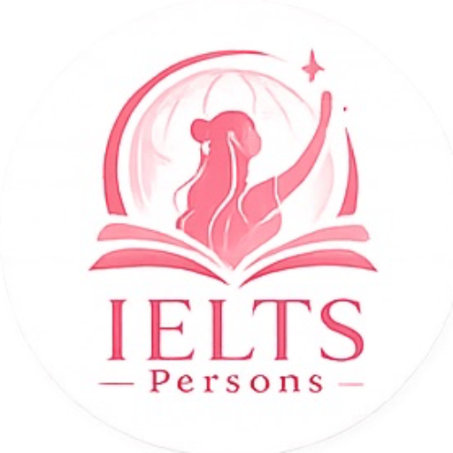

8.5 IELTS · 1520 SAT · Hơn 3 năm kinh nghiệm.
Lộ trình cá nhân hóa, chữa bài chuyên sâu từng tiêu chí giúp học viên vượt target.
Lộ trình học tinh gọn
Hai nhóm lớp thiết kế chuyên biệt. Loại bỏ kiến thức dư thừa, tập trung tối đa vào hiệu quả thực tế trên từng band điểm.
Lớp Moderate
Target: 4.0 – 6.5
T5 & T7 · 20:00 – 21:30
Dành cho học viên muốn củng cố nền tảng, học cách tiếp cận đề bài bản nhất trong 3 tháng.
- Tiếp cận 4 kỹ năng nhờ phương pháp tích hợp.
- Luyện Speaking & Writing song song, liên kết topic.
Lớp Giải Đề
Target: 6.5 – 8.5
Thứ 6 & CN · 20:00 – 21:30
Boost band cấp tốc. Dành cho các bạn đã có nền khá vững, luyện đề chuyên sâu kết hợp chữa bài chi tiết.
- Cập nhật đề mới nhất & xu hướng ra đề liên tục.
- Phân tích kỹ tiêu chí chấm điểm, chiến thuật phòng thi.
Học nghiêm túc.
Vui thật sự.
Pzy tin rằng lớp học không khí thoải mái sẽ giúp học viên tự tin nói, dám sai và tiến bộ nhanh hơn. Một lát cắt ngắn ngủi trên lớp.
Đầu tư xứng đáng cho
kết quả thật.
Học phí được thanh toán theo từng tháng. Giúp học viên hoàn toàn an tâm về chất lượng đào tạo đồng đều.
Đăng ký xếp lớp
Pzy sẽ liên hệ tư vấn lộ trình và bài test đầu vào cho bạn.